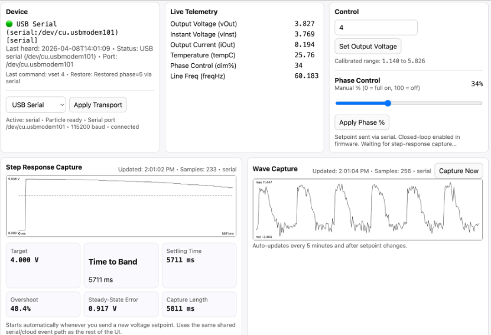
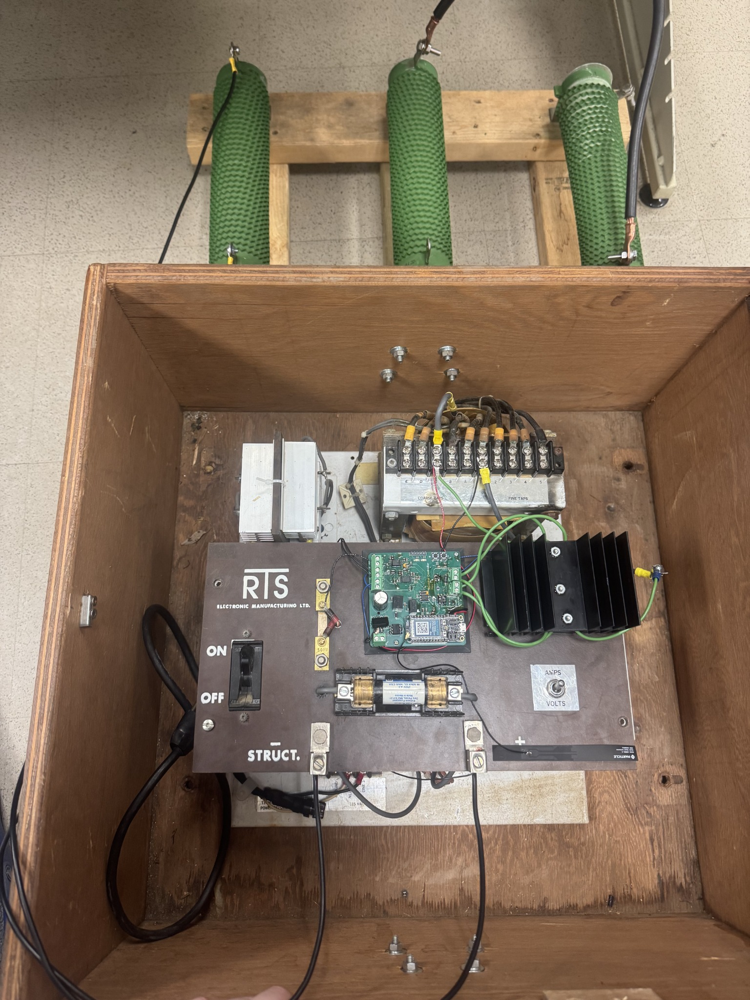
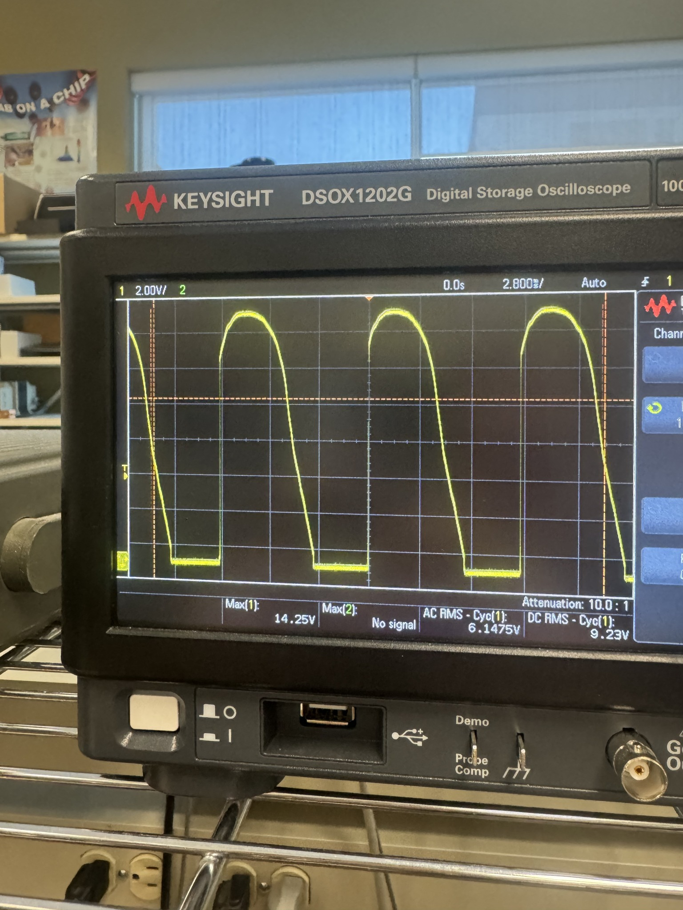

Capstone · firmware + UI + hardware validation
Cathodic Protection Rectifier Controller
Client-facing capstone project for a retrofit controller that adds microcontroller-based monitoring, manual and remote adjustment, SCR phase control, data acquisition, logging, and operator tooling to an existing cathodic-protection rectifier system.
Problem
Cathodic-protection rectifiers are used to protect large steel structures from corrosion, but older field units often require manual local adjustment and manual measurement. The project goal was to retrofit an existing rectifier with a controller that could monitor output behavior, adjust the output, support local operation, and expose remote test/diagnostic features without redesigning the entire rectifier.
What I built
- Designed and implemented the firmware architecture tying together SCR firing, zero-cross timing, measurements, closed-loop control, local buttons, telemetry, and test/debug features.
- Implemented hardware-timed SCR gate pulse scheduling from detected AC zero crossings using a dedicated timer path rather than delay-loop timing.
- Built measurement and calibration code for voltage, current, and temperature acquisition, including scaling, filtering, offset handling, RMS/DC reporting, and debug readouts.
- Added control logic for manual dimming, setpoint control, survey/interruption timing, safe startup, local button behavior, history logging, waveform capture, and step-response capture.
- Developed the companion Flask dashboard for live telemetry, command/control, waveform plotting, spectrum inspection, history export, transport switching, and serial/Particle Cloud communication.
- Assembled, tested, and debugged the PCB and hardware setup on the bench using oscilloscope data, measured waveforms, logged telemetry, and iterative firmware updates.
Firmware architecture
The device firmware was split into practical modules for timing-sensitive control, measurement, communications, state, data logging, and high-level control logic. The real-time path centered on zero-cross detection and timer-scheduled gate pulses, while the main loop handled measurement processing, closed-loop updates, UI/telemetry communication, capture publishing, and local input.
Companion web dashboard
The web UI was built as a practical bench and demonstration tool: direct, test-focused, and easy to modify during integration. It can communicate through Particle Cloud or direct USB serial while exposing the same high-level controls to the browser.
- Live telemetry/status display for voltage, current, temperature, setpoint, and control state.
- Manual phase-control and voltage-setpoint commands.
- Waveform capture, plotting, and simple spectrum calculation.
- History buffer plotting, CSV export, and field-check packet display.
- Runtime transport switching between cloud and serial control paths.

Testing and results
The controller was tested on a bench setup with transformer/rectifier/load hardware and then with a real cathodic-protection rectifier. Testing focused on confirming the acquisition path, gate-drive timing, SCR phase-control behavior, voltage-control behavior, local/remote commands, and practical measurement/debug workflows.

The final project demonstrated that an existing rectifier could be retrofitted with microcontroller monitoring and control while preserving manual operation and adding remote diagnostic features. Some exact implementation details and client-specific data are intentionally left out of this public page.
